#oritech:biomatter
物品标签 · 258 个已收录成员 · 另有 4 个未收录 id
标签成员 (258)
 韭葱种子
韭葱种子bountifulfares:leek_seeds
 玉米种子
玉米种子bountifulfares:maize_seeds
 番茄种子
番茄种子kaleidoscope_cookery:tomato_seed
 辣椒种子
辣椒种子kaleidoscope_cookery:chili_seed
 生菜种子
生菜种子kaleidoscope_cookery:lettuce_seed
 燕麦种子
燕麦种子farm_and_charm:oat_seeds
 玉米粒
玉米粒farm_and_charm:kernels
 大麦种子
大麦种子farm_and_charm:barley_seeds
 生菜种子
生菜种子farm_and_charm:lettuce_seeds
 番茄种子
番茄种子farm_and_charm:tomato_seeds
 草莓种子
草莓种子farm_and_charm:strawberry_seeds
 洋葱
洋葱farm_and_charm:onion
 姜花
姜花snowyspirit:ginger_flower
 亚麻种子
亚麻种子supplementaries:flax_seeds
 小麦种子
小麦种子minecraft:wheat_seeds
 马铃薯
马铃薯minecraft:potato
 胡萝卜
胡萝卜minecraft:carrot
 甜菜种子
甜菜种子minecraft:beetroot_seeds
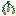
火把花种子minecraft:torchflower_seeds
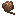
瓶子草荚果minecraft:pitcher_pod
 芦荟仁
芦荟仁atmospheric:aloe_kernels
 污秽浆果种子
污秽浆果种子autumnity:foul_berry_pips
 海绵瓜种子
海绵瓜种子bountifulfares:spongekin_seeds
 朽老种子
朽老种子bountifulfares:hoary_seeds
 甜浆果籽
甜浆果籽bountifulfares:sweet_berry_pips
 茶浆果
茶浆果bountifulfares:tea_berries
 晶壳麦种子
晶壳麦种子eternal_starlight:crinoa_seeds
 辛果种子
辛果种子eternal_starlight:pungency_fruit_seeds
 乌黍种子
乌黍种子eternal_starlight:nocturnal_millet_seeds
 野生稻米
野生稻米kaleidoscope_cookery:wild_rice
 稻米
稻米kaleidoscope_cookery:rice
 啤酒花
啤酒花brewery:hops
 红葡萄种子
红葡萄种子vinery:red_grape_seeds
 白葡萄种子
白葡萄种子vinery:white_grape_seeds
 热带草原红葡萄种子
热带草原红葡萄种子vinery:savanna_grape_seeds_red
 热带草原白葡萄种子
热带草原白葡萄种子vinery:savanna_grape_seeds_white
 针叶林红葡萄种子
针叶林红葡萄种子vinery:taiga_grape_seeds_red
 针叶林白葡萄种子
针叶林白葡萄种子vinery:taiga_grape_seeds_white
 丛林红葡萄种子
丛林红葡萄种子vinery:jungle_grape_seeds_red
 丛林白葡萄种子
丛林白葡萄种子vinery:jungle_grape_seeds_white
 草莓籽
草莓籽neapolitan:strawberry_pips
 西瓜种子
西瓜种子minecraft:melon_seeds
 南瓜种子
南瓜种子minecraft:pumpkin_seeds
 核桃树苗
核桃树苗caupona:walnut_sapling
 无花果树苗
无花果树苗caupona:fig_sapling
 枸杞树苗
枸杞树苗caupona:wolfberry_sapling
 苍白橡树树苗
苍白橡树树苗minecraft:pale_oak_sapling
 扭曲树苗
扭曲树苗architects_palette:twisted_sapling
 花梨木树苗
花梨木树苗atmospheric:rosewood_sapling
 酸枝树苗
酸枝树苗atmospheric:morado_sapling
 丝兰树苗
丝兰树苗atmospheric:yucca_sapling
 梾树树苗
梾树树苗atmospheric:kousa_sapling
 白杨树苗
白杨树苗atmospheric:aspen_sapling
 绿色白杨树苗
绿色白杨树苗atmospheric:green_aspen_sapling
 阴郁木树苗
阴郁木树苗atmospheric:grimwood_sapling
 月桂树苗
月桂树苗atmospheric:laurel_sapling
 干燥月桂树苗
干燥月桂树苗atmospheric:dry_laurel_sapling
 醋栗幼苗
醋栗幼苗atmospheric:currant_seedling
 枫树树苗
枫树树苗autumnity:maple_sapling
 黄枫树苗
黄枫树苗autumnity:yellow_maple_sapling
 橙枫树苗
橙枫树苗autumnity:orange_maple_sapling
 红枫树苗
红枫树苗autumnity:red_maple_sapling
 苹果树树苗
苹果树树苗bountifulfares:apple_sapling
 金苹果树树苗
金苹果树树苗bountifulfares:golden_apple_sapling
 橙子树树苗
橙子树树苗bountifulfares:orange_sapling
 柠檬树树苗
柠檬树树苗bountifulfares:lemon_sapling
 李子树树苗
李子树树苗bountifulfares:plum_sapling
 朽老苹果树树苗
朽老苹果树树苗bountifulfares:hoary_apple_sapling
 核桃树树苗
核桃树树苗bountifulfares:walnut_sapling
 椰树幼苗
椰树幼苗ecologics:coconut_seedling
 核桃树苗
核桃树苗ecologics:walnut_sapling
 杜鹃花
杜鹃花ecologics:azalea_flower
 柳树树苗
柳树树苗environmental:willow_sapling
 松树树苗
松树树苗environmental:pine_sapling
 粉红色紫藤树苗
粉红色紫藤树苗environmental:pink_wisteria_sapling
 蓝色紫藤树苗
蓝色紫藤树苗environmental:blue_wisteria_sapling
 紫色紫藤树苗
紫色紫藤树苗environmental:purple_wisteria_sapling
 白色紫藤树苗
白色紫藤树苗environmental:white_wisteria_sapling
 李树树苗
李树树苗environmental:plum_sapling
 明朗李树树苗
明朗李树树苗environmental:cheerful_plum_sapling
 阴沉李树树苗
阴沉李树树苗environmental:moody_plum_sapling
 月辉树苗
月辉树苗eternal_starlight:lunar_sapling
 北地树苗
北地树苗eternal_starlight:northland_sapling
 阴榕树苗
阴榕树苗eternal_starlight:banyin_sapling
 猩红树苗
猩红树苗eternal_starlight:scarlet_sapling
 榧树树苗
榧树树苗eternal_starlight:torreya_sapling
 海铃茎苗
海铃茎苗eternal_starlight:jinglestem_sapling
 摇篮树苗
摇篮树苗eternal_starlight:cradlewood_sapling
 Dark Cherry Sapling
Dark Cherry Saplingvinery:dark_cherry_sapling
 苹果树苗
苹果树苗vinery:apple_tree_sapling
 梭梭树苗
梭梭树苗natures_spirit:saxaul_sapling
 冷杉树苗
冷杉树苗natures_spirit:fir_sapling
 雪松树苗
雪松树苗natures_spirit:cedar_sapling
 粉花紫藤树苗
粉花紫藤树苗natures_spirit:pink_wisteria_sapling
 蓝花紫藤树苗
蓝花紫藤树苗natures_spirit:blue_wisteria_sapling
 橄榄树苗
橄榄树苗natures_spirit:olive_sapling
 短叶丝兰树苗
短叶丝兰树苗natures_spirit:joshua_sapling
 橙叶枫树树苗
橙叶枫树树苗natures_spirit:orange_maple_sapling
 白花紫藤树苗
白花紫藤树苗natures_spirit:white_wisteria_sapling
 落叶松树苗
落叶松树苗natures_spirit:larch_sapling
 桃花心树苗
桃花心树苗natures_spirit:mahogany_sapling
 红杉树苗
红杉树苗natures_spirit:redwood_sapling
 紫藤树苗
紫藤树苗natures_spirit:purple_wisteria_sapling
 白杨树苗
白杨树苗natures_spirit:aspen_sapling
 红叶枫树树苗
红叶枫树树苗natures_spirit:red_maple_sapling
 柏树树苗
柏树树苗natures_spirit:cypress_sapling
 柳树树苗
柳树树苗natures_spirit:willow_sapling
 柳杉树苗
柳杉树苗natures_spirit:sugi_sapling
 黄叶枫树树苗
黄叶枫树树苗natures_spirit:yellow_maple_sapling
 假紫荆树苗
假紫荆树苗natures_spirit:palo_verde_sapling
 牧豆树苗
牧豆树苗natures_spirit:ghaf_sapling
 桑树树苗
桑树树苗upgrade_aquatic:river_sapling
 橡树树苗
橡树树苗minecraft:oak_sapling
 云杉树苗
云杉树苗minecraft:spruce_sapling
 白桦树苗
白桦树苗minecraft:birch_sapling
 丛林树苗
丛林树苗minecraft:jungle_sapling
 金合欢树苗
金合欢树苗minecraft:acacia_sapling
 深色橡树树苗
深色橡树树苗minecraft:dark_oak_sapling
 杜鹃花丛
杜鹃花丛minecraft:azalea
 盛开的杜鹃花丛
盛开的杜鹃花丛minecraft:flowering_azalea
 红树胎生苗
红树胎生苗minecraft:mangrove_propagule
 樱花树苗
樱花树苗minecraft:cherry_sapling
 百香果馅饼
百香果馅饼atmospheric:passion_fruit_tart
 百香果冰糕
百香果冰糕atmospheric:passion_fruit_sorbet
 糖渍橙子片
糖渍橙子片atmospheric:candied_orange_slices
 橙子布丁
橙子布丁atmospheric:orange_pudding
 橙子冰糕
橙子冰糕atmospheric:orange_sorbet
 醋栗杯状松糕
醋栗杯状松糕atmospheric:currant_muffin
 芦荟凝胶瓶
芦荟凝胶瓶atmospheric:aloe_gel_bottle
 枫糖瓶
枫糖瓶autumnity:syrup_bottle
 椰子片
椰子片ecologics:coconut_slice
 核桃
核桃ecologics:walnut
 仙人掌果
仙人掌果ecologics:prickly_pear
 熟仙人掌果
熟仙人掌果ecologics:cooked_prickly_pear
 蟹肉
蟹肉ecologics:crab_meat
 热带炖菜
热带炖菜ecologics:tropical_stew
 松露
松露environmental:truffle
 海铃脆片
海铃脆片eternal_starlight:jinglestem_crisp
 海铃三明治
海铃三明治eternal_starlight:jinglestem_sandwich
 晶壳麦饭团
晶壳麦饭团eternal_starlight:crinoa_ball
 焗黯影蜗牛
焗黯影蜗牛eternal_starlight:shadow_escargot
 魔窟腐肉
魔窟腐肉eternal_starlight:doomeden_carrion
 腐烂火腿
腐烂火腿eternal_starlight:rotten_ham
 Fried Egg
Fried Eggincubation:fried_egg
 熟鸡蛋
熟鸡蛋bountifulfares:cooked_egg
 煎蛋
煎蛋kaleidoscope_cookery:fried_egg
 Scrambled Eggs
Scrambled Eggsincubation:scrambled_eggs
 巧克力冰激凌
巧克力冰激凌neapolitan:chocolate_ice_cream
 香草冰激凌
香草冰激凌neapolitan:vanilla_ice_cream
 草莓冰激凌
草莓冰激凌neapolitan:strawberry_ice_cream
 香蕉冰激凌
香蕉冰激凌neapolitan:banana_ice_cream
 薄荷冰激凌
薄荷冰激凌neapolitan:mint_ice_cream
 红豆冰激凌
红豆冰激凌neapolitan:adzuki_ice_cream
 那不勒斯风味冰激凌
那不勒斯风味冰激凌neapolitan:neapolitan_ice_cream
 小冰块
小冰块neapolitan:ice_cubes
 白草莓
白草莓neapolitan:white_strawberries
 巧克力草莓
巧克力草莓neapolitan:chocolate_strawberries
 草莓司康饼
草莓司康饼neapolitan:strawberry_scones
 香草荚干
香草荚干neapolitan:dried_vanilla_pods
 香草软糖
香草软糖neapolitan:vanilla_fudge
 香草补丁
香草补丁neapolitan:vanilla_pudding
 香蕉干
香蕉干neapolitan:dried_banana
 香草巧克力条
香草巧克力条neapolitan:vanilla_chocolate_fingers
 薄荷叶
薄荷叶neapolitan:mint_leaves
 烤红豆
烤红豆neapolitan:roasted_adzuki_beans
 红豆咖喱
红豆咖喱neapolitan:adzuki_curry
 蛋奶酒
蛋奶酒snowyspirit:eggnog
 姜饼曲奇
姜饼曲奇snowyspirit:gingerbread_cookie
 熟梭鱼草
熟梭鱼草upgrade_aquatic:boiled_pickerelweed
 桑葚果酱瓶
桑葚果酱瓶upgrade_aquatic:mulberry_jam_bottle
 樱桃
樱桃vinery:cherry
 樱桃
樱桃environmental:cherries
 接骨木莓
接骨木莓bountifulfares:elderberries
 海绵瓜片
海绵瓜片bountifulfares:spongekin_slice
 橙子
橙子bountifulfares:orange
 橙子
橙子atmospheric:orange
 柠檬
柠檬bountifulfares:lemon
 血橙
血橙atmospheric:blood_orange
 橄榄
橄榄natures_spirit:olives
 朽老苹果
朽老苹果bountifulfares:hoary_apple
 半个椰子
半个椰子bountifulfares:coconut_half
 切半的椰子
切半的椰子natures_spirit:coconut_half
 百香果
百香果atmospheric:passion_fruit
 百香果
百香果bountifulfares:passion_fruit
 玉米面包
玉米面包bountifulfares:maize_bread
 生羊排
生羊排kaleidoscope_cookery:raw_lamb_chops
 培根
培根farm_and_charm:bacon
 生五花肉
生五花肉kaleidoscope_cookery:raw_pork_belly
 熟远古兽肉
熟远古兽肉wan_ancient_beasts:cooked_ancient_meat
 生远古兽肉
生远古兽肉wan_ancient_beasts:raw_ancient_meat
 核桃
核桃bountifulfares:walnut
 核桃
核桃caupona:walnut
 番茄
番茄kaleidoscope_cookery:tomato
 沙漠芜菁
沙漠芜菁natures_spirit:desert_turnip
 韭葱
韭葱bountifulfares:leek
 青金石莓
青金石莓bountifulfares:lapisberries
 玉米
玉米bountifulfares:maize
 茶叶
茶叶bountifulfares:tea_leaves
 青金石莓种子
青金石莓种子bountifulfares:lapisberry_seeds
 海绵瓜
海绵瓜bountifulfares:spongekin
 晶壳麦
晶壳麦eternal_starlight:crinoa
 辛果
辛果eternal_starlight:pungency_fruit
 乌黍
乌黍eternal_starlight:nocturnal_millet
 遗忘乌黍
遗忘乌黍eternal_starlight:forgotten_nocturnal_millet
 红辣椒
红辣椒kaleidoscope_cookery:red_chili
 青辣椒
青辣椒kaleidoscope_cookery:green_chili
 番茄
番茄farm_and_charm:tomato
 生菜
生菜kaleidoscope_cookery:lettuce
 生菜
生菜farm_and_charm:lettuce
 玉米
玉米farm_and_charm:corn
 灵魂之花
灵魂之花oritech:wither_crop_block
 姜
姜snowyspirit:ginger
 亚麻
亚麻supplementaries:flax
 甜菜根
甜菜根minecraft:beetroot
 仙人掌
仙人掌minecraft:cactus
 可可豆
可可豆minecraft:cocoa_beans
 西瓜
西瓜minecraft:melon
 下界疣
下界疣minecraft:nether_wart
 南瓜
南瓜minecraft:pumpkin
 甘蔗
甘蔗minecraft:sugar_cane
 小麦
小麦minecraft:wheat
 红豆
红豆neapolitan:adzuki_beans
 荧光菇
荧光菇darkerdepths:glowshroom
 燕麦
燕麦farm_and_charm:oat
 大麦
大麦farm_and_charm:barley香蕉
oritech:banana
 干海带
干海带minecraft:dried_kelp
 矮草丛
矮草丛minecraft:short_grass
 海带
海带minecraft:kelp
 海草
海草minecraft:seagrass
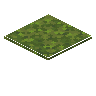
覆地苔藓minecraft:moss_carpet
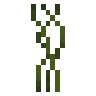
小型垂滴叶minecraft:small_dripleaf
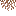
垂根minecraft:hanging_roots
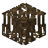
红树根minecraft:mangrove_roots
 高草丛
高草丛minecraft:tall_grass
 藤蔓
藤蔓minecraft:vine下界苗
minecraft:nether_sprouts
 垂泪藤
垂泪藤minecraft:weeping_vines
 缠怨藤
缠怨藤minecraft:twisting_vines
 发光地衣
发光地衣minecraft:glow_lichen
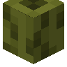
海泡菜minecraft:sea_pickle
 睡莲
睡莲minecraft:lily_pad
 棕色蘑菇
棕色蘑菇minecraft:brown_mushroom
 红色蘑菇
红色蘑菇minecraft:red_mushroom
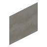
蘑菇柄minecraft:mushroom_stem
 绯红菌
绯红菌minecraft:crimson_fungus
 诡异菌
诡异菌minecraft:warped_fungus绯红菌索
minecraft:crimson_roots诡异菌索
minecraft:warped_roots
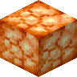
菌光体minecraft:shroomlight
 蕨
蕨minecraft:fern
 大型蕨
大型蕨minecraft:large_fern
 苔藓块
苔藓块minecraft:moss_block
 大型垂滴叶
大型垂滴叶minecraft:big_dripleaf
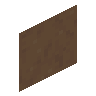
棕色蘑菇方块minecraft:brown_mushroom_block
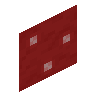
红色蘑菇方块minecraft:red_mushroom_block
 下界疣块
下界疣块minecraft:nether_wart_block
 诡异疣块
诡异疣块minecraft:warped_wart_block
使用该标签的配方
oritech:bio_generatorOritech
原始 JSON
{
"type": "oritech:bio_generator",
"ingredients": [
{
"tag": "oritech:biomatter"
}
],
"results": [],
"time": 300
}oritech:grinderOritech

原始 JSON
{
"type": "oritech:grinder",
"ingredients": [
{
"tag": "oritech:biomatter"
}
],
"results": [
{
"count": 1,
"id": "oritech:biomass"
}
],
"time": 120
}未收录条目 (4)
c:foods/vegetablec:foods/fruitenderio:plant_matter_greenenderio:plant_matter_brown